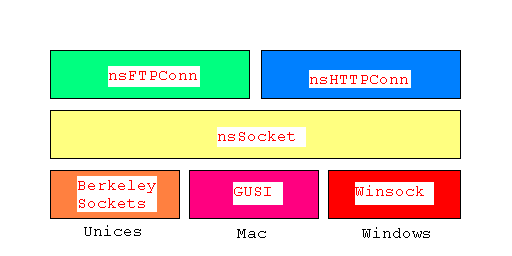

libxpnet：アーキテクチャおよび API 概要
原著者：Samir Gehani <sgehani@netscape.com>$Id: index.html,v 1.1.1.1 2004/09/14 22:17:58 okome Exp $
-
モチベーション
Mozilla と Netscape 6 のインストーラは次のように設計されています：ユーザーが、200 KB 以下の軽くて小さいイントーラをダウンロードし、どのソフトウエアをインストールしたいか、どのディレクトリにインストールしたいかを選択する、といった感じです。したがって、選択されたパッケージのみをダウンロードしインストールするので、低速接続ユーザーにとって大幅な時間の節約になります。小さいインストーラは全てプラットフォームネイティブなコードで書いてあります。クラスプラットフォームに対応するために、別々のコードベースが三つあります：windows 用のインストーラコードベース、macintosh 用、そして、unix 用です。windows と mac 用のインストーラはサードパーティの SmartDownload というライブラリを使用して HTTP および FTP 経由でインストーラを取ってきます。Linux 用のインストーラは libxpnet のオリジナルのままの形をとっており、FTP クライアントのクリーンなインプリメンテーションです。Netscape 6 のオリジナルリリース以降、windows および mac 用の SmartDownload ライブラリを初めに書いたサードパーティベンダがサポートを止めてしまいました。しかしこのライブラリには大きな欠点があったため、メンテナンス可能なダウンロードライブラリが必要になりました。そうするには以下の二つの選択肢がありました：
- windows と mac 用の SmartDownload ライブラリのソースコードを手に入れオリジナルの linux FTP インプリメンテーションを拡張し、SmartDownload ライブラリと実質的に同じものにする。
- オリジナルの linux FTP インプリメンテーションを拡張し SmartDownload 機能セットと実質的に同じものにし、そのライブラリをクラスプラットフォーム化する。
このうち二番目を選択することにしました。その理由は：- 既によく知っている、メンテナンスのしやすいコードベースを手に入れることができた(SmartDownload ソースのドキュメントは最小限あるいは全く提供されていなかったのでエンジニア達に評判が悪かった)。
- 独自の統合インタフェースを実装することができた(SmartDonwload ライブラリを使うと SmartDownload 特有のインタフェースを使わなければならず、インタフェースガイドラインに準拠していないものだった)。
- ネットワークライブラリを思うままに調整でき、実用的あるいは効率的観点からサーバーとうまく動作するようにすることができた。
- その時点で Mozilla は、軽いインストーラーのダウンロード機能およびアーキテクチャの利点を生かすことができた：それ以前は SmartDownload ライブラリバイナリは mozilla.org で使用できなかった。mozilla プロジェクト全て(ほとんど)で使われるコードにはソースが必要だったので。
-
機能セット
モチベーションについて説明したところで、次は SmartDownload 相当のものを libxpnet に実装した機能の一覧です： - ファイル取得のための RFC 2068 に準拠した最小限の HTTP/1.1 サポート
- ファイル取得のための RFC 959 に準拠した最小限の FTP サポート
- HTTP プロキシ一式を使ったプロキシのサポート
- 一時中断/再開のサポート
- キャンセルのサポート
-
サンプルおよびライブラリのビルド
TestLibxpnet に API の使い方サンプルがあります。ライブラリはどのプラットフォーム上でも簡単にビルドできます。まず次の三つのオブジェクト：nsSocket.o、nsFTPConn.o、 nsHTTPConn.o をビルドし静的ライブラリにリンクしてください。注意してほしいのですが、三つのクラス、つまり nsSocket、nsFTPConn、nsHTTPConn の全てには、コンパイル時に適切なマクロが定義されていれば、セルフテストがビルトインされています：nsSocket には TEST_NSSOCKET、nsHTTPConn には TEST_NSHTTPCONN、そして nsFTPConn には TEST_NSFTPCONN です。こういったテストマクロが有効になっている場合、各クラスはスタンドアロンプログラムにコンパイル可能です。また、mozilla をビルドしている場合には、作成された静的ライブラリは dist あるいは libxpnet/src ディレクトリにあるはずです。
-
アーキテクチャ
libxpnet がサポートしている二つのプロトコル、つまり HTTP と FTP は、ネットワークを直接扱うクラスプラッフォームのソケットレイヤー上に構築されています。ソケットレイヤーは、利用可能なプラットフォーム特有のネットワークライブラリとやりとりをします：unix 上ではカーネルベースの berkeley sockets、windows 上では Winsock、mac 上では GUSI です。
-
API 概要
-
nsHTTPConn
コンストラクター
- nsHTTPConn(char *aHost, int aPort,
char *aPath);
デフォルトでない可能性のあるポートにおける与えられたホストへ HTTP 接続する準備をし、その結果レスポンスを指定されたパスのファイルにダウンロードする。
aHost: DNS 参照可能なホストネームあるいは IP アドレスストリング(現時点では IPv4 のみサポート)。
aPort: デフォルトでない可能性のある整数ポート番号。65536 より小さい。
aPath: ローカルシステム上の宛先ファイルへのパス。HTTP レスポンス内容から作成される。
- nsHTTPConn(char *aURL);
与えられた URL へ HTTP 接続する準備をしファイルを取得する。ローカルシステム上の宛先ファイルには、与えられた HTTP URL のリーフネームから名前が付く。リーフネームが見つからなかった場合のデフォルトファイル名は「index.html」。注意してほしいのは、ダウンロードされたファイルはカレントワーキングディレクトリ内に作成されること。
aURL: RFC 1738 で指定されたセマンティクス毎の HTTP URL。
- nsHTTPConn(char *aHost, int aPort,
char *aPath, int (*aEventPumpCB)(void));
デフォルトでない可能性のあるポートにおける与えられたホストへ HTTP 接続する準備をし、その結果レスポンスを指定されたパスのファイルにダウンロードする。イベントポンプコールバックが提供され、接続フェーズ中に通知を受信する。
aHost: DNS 参照可能なホストネームあるいは IP アドレスストリング(現時点では IPv4 のみサポート)。
aPort: デフォルトでない可能性のある整数ポート番号。65536 より小さい。
aPath: HTTP サーバー上のソースファイルへのパス(http://<aHost>:<aPort>/<aPath>)
aEventPumpCB:省略可能で クライアントが実装したコールバック関数。接続フェーズ中にコールされる(省略可能で、NULLの可能性あり)。
- nsHTTPConn(char *aURL, int (*aEventPumpCB)(void));
与えられた URL へ HTTP 接続する準備をしファイルを取得する。ローカルシステム上の宛先ファイルには、与えられた HTTP URL のリーフネームから名前が付く。リーフネームが見つからなかった場合のデフォルトファイル名は「index.html」。注意してほしいのは、ダウンロードされたファイルはカレントワーキングディレクトリ内に作成されること。 イベントポンプコールバックが提供され、接続フェーズ中に通知を受信する。
aURL: RFC 1738 によって定義されたセマンティクス毎の HTTP URL。
aEventPumpCB: クライアントにより実装されたコールバック関数。接続フェーズ中に呼び出される(省略可能で、NULL の可能性あり)。
メソッド
- int Open();
コンストラクターで渡されたホストおよびポートのスペックに従い新しい HTTP 接続をオープンする。
- int ResumeOrGet(HTTPGetCB aCallback, char
*aDestFile);
ローカルファイルシステム上にもとの宛先ファイルがある場合には中間ファイルのダウンロードを再開し、ない場合にはダウンロードを新規に開始する。コンストラクターで渡された URL あるいはサーバーパスを使用。ダウンロードの完了していないファイルの終端から自動的に開始。
aCallback: クライアントが実装したオプションダウンロード進捗コールバック(NULL の可能性あり)。1KB 毎にアップデートされる(libxpnet ソースにチューンされる可能性あり)。
aDestFile: ダウンロードする宛先ファイルへのパス。
- int Get(HTTPGetCB aCallback,
char *aDestFile);
コンストラクターで渡された URL あるいはサーバーパスの HTTP GET を実行する。
aCallback: クライアントが実装したオプションダウンロード進捗コールバック(NULL の可能性あり)。1KB 毎にアップデートされる(libxpnet ソースにチューンされる可能性あり)。
aDestFile: ダウンロードする宛先ファイルのパス。
- int Get(HTTPGetCB aCallback, char
*aDestFile, int aResumePos);
中間ファイルのダウンロードをファイルの再開位置から開始する。コンストラクターで渡された URL あるいはサーバーパスを用いる。
aCallback: クライアントが実装したオプションダウンロード進捗コールバック(NULL の可能性あり)。1KB 毎にアップデートされる(libxpnet ソースにチューンされる可能性あり)。
aDestFile: ダウンロードする宛先ファイルのパス。
aResumePos: ファイルの途中の、ダウンロードを開始する位置：通常は、途中までダウンロードされたファイルのサイズ。
- int Close();
コンストラクターで指定されたサーバーへの HTTP 接続がもともとオープンされている場合にクローズする。
- void SetProxyInfo(char *aProxiedURL,
char *aProxyUser, char *aProxyPswd);
HTTP GET を実行する前に API を使用する。HTTP プロキシサーバー 経由でダウンロードする必要がある場合には、以下のものを渡す：コンストラクターではプロキシサーバーホスト名とポート、そしてこの API ではダウンロードすべき実際の URL、つまり「プロキシされた URL」。さらに、プロキシサーバーのユーザー名/パスワードのスペックをオプションでサポート。パスワードは base64 エンコードされていて、指定すれば認証目的でネットワークに送られる。
aProxiedURL: ダウンロードするファイルの URL (FTP あるいは HTTP URL)。
aProxyUser: オプションのプロキシサーバーユーザー名。
aProxyPswd: オプションのプロキシサーバーのパスワード。base64 エンコードされていて、プロキシサーバーに送られる。
- static int ParseURL(const char *aProto,
char *aURL, char **aHost, int *aPort, char **aPath);
FTP あるいは HTTP URL (FTP と HTTP のどちらになるかはこの URL がどのプロトコルになるかに依存する)をパースする補助機能的静的メソッド。ホスト、ポート、サーバーパスを返す。プロトコル実装コンストラクターと共に使用すると便利。
aProto: この URL が存在すると思われるプロトコル(nsHTTPConn.cpp に定義されている kHTTPProto と kFTPProto)。
aURL: パースするソース URL。
aHost: 与えられた URL からパースした結果のホスト名。
aPort: 与えられた URL からパースした結果のポート整数。
aPath: 与えられた URL からパースした結果得られた、ダウンロードするファイルへのサーバーパス。
- nsHTTPConn(char *aHost, int aPort,
char *aPath);
-
nsFTPConn
コンストラクター
- nsFTPConn(char *aHost);
与えられたホストへ FTP 接続する準備をする。
aHost: DNS 参照可能なホストネームあるいは IP アドレスストリング(現時点では IPv4 のみサポート)。
- nsFTPConn(char *aHost, int (*aEventPumpCB)(void));
与えられたホストへ FTP 接続する準備をする。イベントポンプコールバックが提供され、接続フェーズ中に通知を受信する。
aHost: DNS 参照可能なホストネームあるいは IP アドレスストリング(現時点では IPv4 のみサポート)。
aEventPumpCB: クライアントにより実装されたコールバック関数。接続フェーズ中に呼び出される(省略可能で、NULL の可能性あり)。
メソッド
- int Open();
デフォルトの FTP ポート 21 上の FTP ホストへの接続をオープンする。コンスラクターで指定したホストを使用。
- int Open(char *aHost);
デフォルトの FTP ポート 21 上の FTP ホストへの接続をオープンする。この API のクライアントで明示的に指定したホストを使用。
aHost: DNS 参照可能なホストネームあるいは IP アドレスストリング(現時点では IPv4 のみサポート)。
- int ResumeOrGet(char *aSrvPath, char
*aLoclPath, int aType, int aOvWrite, FTPGetCB aCBFunc);
ローカルファイルシステム上にもとの宛先ファイルがある場合には中間ファイルのダウンロードを再開し、ない場合にはダウンロードを新規に開始する。この API のクライアントが明示的に渡したサーバーパスを使用。ダウンロードの完了していないファイルの終端から自動的に開始。
aSrvPath: サーバー上のファイルへのパス。 (ftp://<aHost>:21/<aPath>)。
aLoclPath: ローカルファイルシステム上の宛先ファイルへのパス。
aType: FTP 転送タイプ。つまり、バイナリーあるいは ASCII。
aOvWrite: 宛先ファイルが既にある場合に上書きするかどうか。
aCBFunc: クライアントが実装したオプションダウンロード進捗コールバック(NULL の可能性あり)。1KB 毎にアップデートされる(libxpnet ソースにチューンされる可能性あり)。
- int Get(char *aSrvPath, char *aLoclPath,
int aType, int aOvWrite, FTPGetCB aCBFunc);
この API のクライアントが明示的に渡したサーバーパスの FTP 検索コマンド(RETR)を実行する。
aSrvPath: サーバー上のファイルへのパス(ftp://<aHost>:21/<aPath>)。
aLoclPath: ローカルファイルシステム上の宛先ファイルへのパス。
aType: FTP 転送タイプ。つまり、バイナリーあるいは ASCII。
aOvWrite: 宛先ファイルが既にある場合に上書きするかどうか。
aCBFunc:
- int Get(char *aSrvPath, char *aLoclPath,
int aType, int aResumePos, int aOvWrite, FTPGetCB aCBFunc);
中間ファイルのダウンロードをファイルの再開位置から再開する。この API のクライアンが明示的に渡したサーバーパスを使用。FTP サーバーに再開を知らせるには、ファイルを取り寄せる前にリスタート(REST)コマンドを送る。
aSrvPath: サーバー上のファイルへのパス(ftp://<aHost>:21/<aPath>)。
aLoclPath: ローカルファイルシステム上の宛先ファイルへのパス。
aType: FTP 転送タイプ。つまり、バイナリー あるいは ASCII。
aResumePos: ファイルの途中の、ダウンロードを開始する位置：通常は、途中までダウンロードされたファイルのサイズ。
aOvWrite: 宛先ファイルが既にある場合に上書きするかどうか。
aCBFunc: クライアントが実装したオプションダウンロード進捗コールバック(NULL の可能性あり)。1KB 毎にアップデートされる(libxpnet ソースにチューンされる可能性あり)。
- int Close();
コンストラクターで指定されたサーバーへの FTP 接続が既にオープンされている場合には QUIT コマンドを送りクローズする。
- nsFTPConn(char *aHost);
-
nsSocket
コンストラクター
- nsSocket(char *aHost, int aPort);
指定されたポート上の指定されたホストへのソケットをオープンする準備をする。ローカル一時ポートを使用。
aHost: DNS 参照可能なホストネームあるいは IP アドレスストリング(現時点では IPv4 のみサポート)。
aPort: デフォルトでない可能性のある整数ポート番号。65536 より小さい。
- nsSocket(char *aHost, int aPort,
int (*aEventPumpCB)(void) );
指定されたポート上の指定されたホストへのソケットをオープンする準備をする。ローカル一時ポートを使用。イベントポンプコールバックが提供され、接続フェーズ中に通知を受信する。
aHost: DNS 参照可能なホストネームあるいは IP アドレスストリング(現時点では IPv4 のみサポート)。
aPort: デフォルトでない可能性のある整数ポート番号。65536 より小さい。
aEventPumpCB: クライアントにより実装されたコールバック関数。接続フェーズ中に呼び出される(省略可能で、NULL の可能性あり)。
メソッド
- int Open();
コンストラクターで渡されたホスト/ポートへのソケットをオープンする。
- int SrvOpen(); // クライアントの Open() のサーバー版
一時ポート上に listen ソケットをオープンする。FTP 受動モードに便利。
- int SrvAccept(); //必ず SrvOpen() の後にコールすること
listen ソケット上のクライアント接続を受け入れる。
- int Send(unsigned char *aBuf, int
*aBufSize);
既にオープンしているホスト/ポートへ指定されたサイズのバッファーを送る。先に Open() がコール済みでなければならない。
aBuf: 送付するバッファー。
aBufSize: 送付するバッファーのサイズ(リターン時に、どのくらいのバッファーを送ったかを表示)。
- int Recv(unsigned char *aBuf, int
*aBufSize);
想定されるサイズのバッファーを受信する：バッファーが一杯になるまでソケットをフラッシュし続ける。
aBuf: 受信データを入れるバッファー。
aBufSize: 想定される受信バイト数(リターン時には実際の受信バイト数)。
- int Recv(unsigned char *aBuf, int
*aBufSize, int aTimeoutThresholdUsecs);
想定されるサイズのバッファーを受信する：バッファーが一杯になるまでソケットをフラッシュし続ける。非ブロッキンググループ時には、select() に渡されたマイクロ秒単位のコンフィグレーション可能なタイムアウトしきい値を受信する。
aBuf: 受信データを入れるバッファー。
aBufSize: 想定される受信バイト数(リターン時には実際の受信バイト数)。
aTimeoutThresholdUsecs: マイクロ秒単位で指定された全タイムアウト。
- int Close();
プラットフォームネイティブなディスクリプターをクローズし、このソケットをクローズする。
- int GetHostPortString(char **aHostPort);
listen ソケットディスクリプターの IP アドレスおよびポートのホストーポートストリング表記を返す。つまり「<AA1>,<AA2>,<AA3>,<AA4>,<PP1>,<PP2>」のようなもので、<AAx> とは IP アドレスの x 番目の位置にある整数のストリング値を、 <PPx> とはそのポートの上位 8 ビット および下位 8 ビットのことを表わす。
aHostPort: リターン時のフォーマットされたホストーポートストリング。
- static float CalcRate(struct timeval
*aPre, struct timeval *aPost, int aBytes);
ダウンロード率を計算する補助機能的ユーティリテイ。FTP および HTTP インプリメンテーションのクライアントがコールバック時に使用する可能性がある。
aPre: ダウンロード前の時刻。
aPost: 現在時刻、あるいはダウンロード完了時の時刻。
aBytes: ダウンロードしたバイト数。
- nsSocket(char *aHost, int aPort);
-
-
今後の課題
この文書の執筆時点で、libxpnet は linux、solaris、mac、windows に渡って構築されています。実働コードになってはいますが、まだまだ若いのです。今後の課題として一番の目標とすべきことは、各種サーバーに対してテストを行ないクライアントを適切に調整をすることです。これは、欠点を修正してできる限り多くのサーバーに対応することにより行います。このコードを他の unix プラットフォームに移植するのは数ある二番目の目標のうちの一つとなりますが、特に考慮しなければいけないのは、POSIX 準拠の API をもっている unix と berkeley sockets をサポートしている unix です。Mac OS X への移植は unix への移植作業の一貫となります。このライブラリをもっと広範囲に移植する目標と同じくらい重要なものとしてあげられるのは、HTTP インプリメンテーションを改良し複数の HTTP リクエストに対して接続を一つだけオープンすることのサポートがあります。FTP インプリメンテーションはそのように設計されていて、実働コード中で現在そのように使われています。二つのプロトコルを同じような実装することで、クライアントが API セットを使いやすくなります。
必要条件は大まかに次のようなものです：クライアントがプロキシのむこうであるかどうかにかかわらず、HTTP または FTP でファイルをダウンロードできること。接続が切断されたかどうか、あるいはユーザーが明示的にダウンロードを一時停止あるいはキャンセルしたかどうかにかかわらず、ダウンロード中間ファイルのダウンロードを再開できること。したがって、ダウンロードを明示的に一時中断/キャンセルできる機構と、明示的な一時中断/キャンセルと接続切断を見分けることができる機構があります。